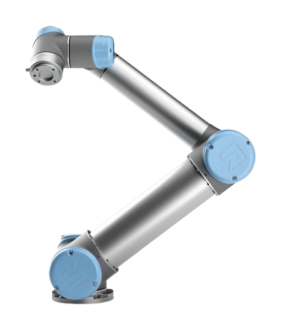

ROBÔ COLABORATIVO
COBOT
O robô colaborativo (Cobot) foi criado para operar ao lado das pessoas com segurança, reduzindo riscos no ambiente de trabalho. Ele usa sensores (como detecção de força/contato) e lógica de controle para perceber aproximações e ajustar a velocidade, garantindo colaboração direta com segurança, conforme avaliação de risco e configuração do sistema.

Conceito
O cobot (robô colaborativo) foi desenvolvido para operar ao lado de pessoas, reduzindo riscos no ambiente de trabalho. Seu diferencial está em sensores, funcionalidades de segurança e na capacidade de colaborar com o operador com velocidades e modos de funcionamento ajustados ao contexto.
Princípio de funcionamento
O controle monitora continuamente sinais de sensores (força/contato, proximidade, detecção de presença e condições do sistema). Quando ocorre aproximação ou contato dentro de limites de segurança, o cobot reduz velocidade, interrompe o movimento ou executa uma resposta programada conforme as regras de segurança e avaliação de risco.
Principais características técnicas
- Trabalho colaborativo ao lado de humanos
- Sensores de segurança (proximidade/força/contato)
- Modos de operação com limites de segurança
- Programação simplificada e rápida adaptação
- Alta flexibilidade para diferentes tarefas
- Integração com ferramentas e sistemas auxiliares
Aplicações industriais
- Inspeção de qualidade
- Montagem leve
- Embalagem
- Laboratórios e testes
- Indústria eletrônica e processos assistidos
- Tarefas em que humanos e robôs compartilham o espaço
Integração com sistemas de automação e IoT
O cobot pode ser integrado a células automatizadas e sistemas de supervisão para coletar dados de execução, paradas, ciclos e eventos. Em arquiteturas IoT/Indústria 4.0, a comunicação com MES/SCADA e sistemas de monitoramento pode ocorrer por protocolos industriais como MQTT, OPC UA, Profinet e Ethernet Industrial (Ethernet/IP), permitindo monitoramento remoto e manutenção preditiva.
Modelos comerciais
| Modelo | Fabricante |
|---|---|
| UR5 / UR10 (família cobot) | Universal Robots |
| Robôs colaborativos (família / cobots industriais) | Doosan |
| Collaborative robots / cobots | Techman Robot |
Desempenho
Funcionamento
1
Recebe a programação das tarefas.
2
Monitora constantemente a presença humana.
3
Executa os movimentos com segurança.
4
Compartilha dados em tempo real com outros sistemas.